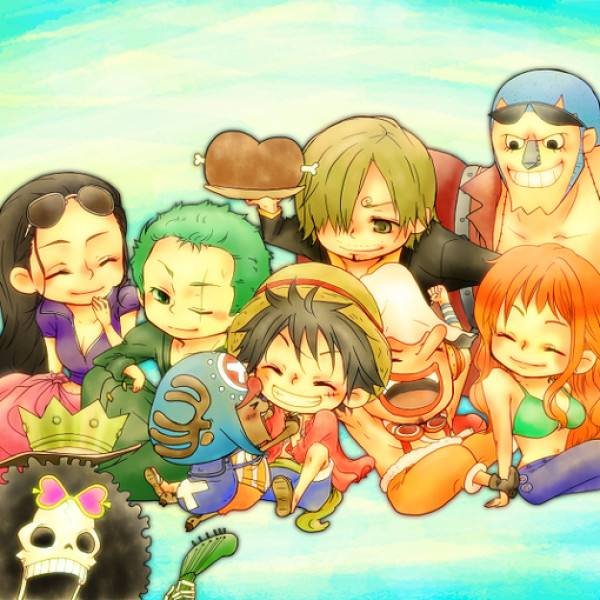

船长：蒙奇·D·路飞
蒙奇·D·路飞，日本漫画《航海王》以及衍生作品中的角色，男主角，草帽海贼团、草帽大船团船长，极恶的世代之一。橡胶果实能力者，悬赏金5亿贝里。梦想是找到传说中的One Piece，成为海贼王。 他性格积极乐观，爱憎分明且十分重视伙伴，不甘屈居于他人之下，对任何危险的事物都超感兴趣。和其他传统的海贼所不同的是，他并不会为了追求财富而无故杀戮，而是享受着身为海贼的冒险和自由。从忘年交香克斯手里继承了海贼王罗杰的草帽
一头黑色的短发，看上去有些乱，左眼下有曾经自己为了表现勇敢而自己划下的伤疤 。平时身穿红色的小坎肩，蓝色的半腿牛仔裤。脚穿草鞋。头上一直戴着曾经红发寄托给路飞的草帽。两年后，胸口多出了因赤犬的攻击而产生的“X”型伤疤，而在穿着上，他在腰上加了一条黄色腰带[19] 。脸上永远洋溢自信的笑容。
草帽海贼团之东海篇
路飞童年时受到海贼“红发”香克斯的启蒙，自小就立志要成为“海贼王” 。路 飞17岁时，戴着“红发”香克斯托付的草帽，只身从故乡风车村出发。途中他遇到在“亚比达海贼团”打杂的少年克比，在打倒海贼团的船长“铁棒”亚尔丽塔后，路飞得知东海有个外号“海贼猎人”的剑士罗罗诺亚·索隆 ，并想要拉拢他成为伙伴，遂与可比两人来到被海军支部上校“斧手”蒙卡统治的谢尔兹镇。 由于索隆曾在镇上打伤了蒙卡上校的儿子贝鲁梅柏所饲养的狼犬，在被拘捕后即将被处死。索隆被路飞的气势慑服，并合力打倒蒙卡上校。索隆正式成为了路飞的第一个伙伴，而克比在路飞的帮助下也如愿成为了海军，在航行的路途中接续遇见了娜美、乌索普 、山治等人组成了草帽海贼团准备进入伟大的航道，路飞也因打败了鱼人海贼团阿龙一伙的船长路飞成为了三千万贝里的赏金犯。 草帽一行人到达了罗格镇，受到管辖这里的海军本部少校“白猎人”斯摩格(现为海军本部准将)和其他许多敌人的夹击，在路飞的父亲蒙奇·D·龙的帮助下，成功出航。
其他篇章敬请期待！